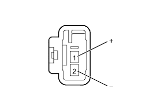

Speaker Assembly Front NO.1 Inspection |
| 1. Inspect Speaker Assembly Front NO.1 |
Check that the speaker installation is not loose or rattling.
Check that there is no foreign matter inside the speaker and that the speaker cone paper is not torn.
 |
Resistance Measurement
Disconnect the front speaker assembly NO.1 connector.
Using SST (Toyota electrical tester), measure the resistance between the speaker terminals.
| Tester Connection (Terminal Symbol) | Condition | Standard |
|---|---|---|
| 1(+) - 2(-) | Always | Approximately 4 Ω |